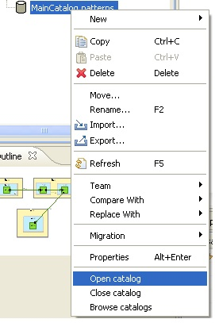

Browsing Catalogs
Catalogs can be browsed, opened and closed via the 'Browse catalogs' menu item.

Alternatively, a catalog (.patterns file) can be right-clicked in the Project Explorer: this also provides access to the 'Browse catalogs' menu item, in addition to menu items for opening and closing the catalog.

The 'Browse catalog' menu item opens a dialog which is similar to the Pattern Creation wizard except that the contents of patterns are in 'read-only' mode: they can be seen but not modified. The only exception to that rule is the feature for deleting patterns from catalogs.
Browsing: tab 1
Browsing: tab 2
Browsing: tab 3